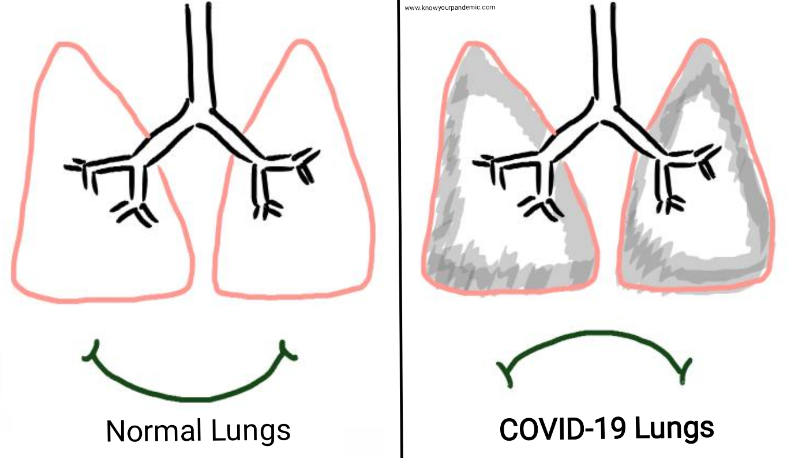

The time from exposure to COVID-19 to the moment when symptoms begin is, on average, 5-6 days and can range from 1-14 days. Hence, people who have been exposed to the virus are advised to remain at home and stay away from others, for a minimum of 14 days, to prevent the spread of the virus, especially where testing is not easily available.
Watch for the Symptoms
People with COVID-19 have had a wide range of symptoms reported – from mild symptoms to severe illnesses. Symptoms might appear 2-14 days after exposure to the virus. People with these symptoms may have COVID-19:
Most common symptoms
Less common symptoms
fever
dry cough
tiredness/ weakness
aches and pains
sore throat
diarrhoea
conjunctivitis
headache
Loss of taste or smell
Nausea/vomiting
a rash on skin, or discolouration of fingers or toes
Mild symptoms:
(NO BREATHLESSNESS, O2 SATURATION >94%)
Fever <100°F
Dry cough
Weakness
Muscle aches
Sore throat
Nasal congestion
Headache
On average it takes 5–6 days from when someone is infected with the virus for symptoms to show, however it can take up to 14 days. The symptoms usually last for about a week.
People with mild symptoms who are otherwise healthy should manage their symptoms at home with guidance from a healthcare professional. Do not go to the hospital and risk yourself.
Feel free to reach out to us for guidance/ consultation and help regarding your situation.
Moderate symptoms:
(SLIGHT BREATHLESSNESS, O2 SATURATION 90-94%)
Symptoms to watch closely, especially in combination:
Fever with muscle aches and fatigue
Reduced sense of taste and smell
Severe diarrhea and other stomach problems
Increasing dry, persistent cough that is worsening
If you feel your condition is worsening or if your symptoms persist for over a week and you are concerned, please call a healthcare provider to evaluate you & to plan the further action.
Feel free to reach out to us for guidance/ consultation and help regarding your situation.
Serious symptoms:
(SEVERELY BREATHLESS, O2 SATURATION <90%)
If you are experiencing the severe symptoms listed below, go to the nearest hospital or emergency room right away or call your state COVID helpline number.
Do not ignore your body's warning signs. Delaying treatment can have serious consequences.
Severe symptoms are as follows:
Shortness of breath or difficulty breathing
Chest or upper abdominal pain or pressure
Sudden dizziness, weakness or fainting
Sudden change in vision / blurring vision
Confusion, sudden change in your mental status
Sudden or severe pain
Uncontrolled bleeding
Severe vomiting or diarrhea
Vomiting or coughing blood
Difficulty speaking/ loss of speech or movement
Low oxygen levels (<90% SpO2 reading)
Extreme sleepiness or inability to wake
Blue face, lips or hands/feet
Cold hands and feet
Reduced urine output
Fast heart rate/ weak pulse
Do seek immediate medical attention if you have serious symptoms

6 Minute Walk Test
A 6-minute walk test is an established clinical test to look for cardio pulmonary exercise tolerance. It helps determine how severe is the COVID infection.
The following are the steps to do the test:
Stand with pulse oximeter attached to your finger. Make sure it fits the finger correctly and covers the finger completely. Wait for about 30 seconds for the reading to stabilize and check the Oxygen Saturation. (it would normally be >97% in healthy individuals and could be slightly lower i.e. >94% in people with underlying conditions)
Then walk in the confines of your own room for 6 minutes.
The time may be cut short for 3 minutes in patients above 60 years of age.
Wait for 30 seconds and check the reading on the pulse oximeter again.
Any drop in saturation below 93%, or an absolute drop of more than 3%, or feeling unwell (light headed, short of breath) while performing the test are significant findings.
If the test is positive that is you observe a significant drop in Saturation, immediately contact your doctor for further guidance. If you're very breathless even after sitting down for some time after the test, go to the nearest hospital/ emergency room as soon as you can.
This test is used to unmask hypoxia.
(Hypoxia means there is less Oxygen in the blood which supplies to the various organs. Hence of real concern.)
Patients with positive 6 minute walk test may progress to become hypoxic and hence early intervention in form of admission to hospital, or shifting to ICU and giving oxygen and other appropriate treatment bis recommended.
What is the 6-minute walk test?
Who is a COVID-19 Suspect Case?
A patient with acute respiratory illness (fever and at least one sign/ symptom of respiratory disease e.g., cough, shortness of breath)
OR a history of travel to of residence in a country/area or territory reporting local transmission of COVID-19 disease during the 14 days prior to symptom onset/ coming in contact with the covid-19 positive patient/ living in the same building of a covid positive patient
OR a patient or Health care worker with any acute respiratory illness
AND having been in contact with a confirmed COVID-19 case in the past 14 days prior to onset of symptoms;
OR a patient with severe acute respiratory infection (fever and at least one sign/symptom of respiratory disease e.g., cough, shortness breath)
AND requiring hospitalization
AND with no other etiology that explains the clinical presentation;
OR case for whom testing for COVID-19 is inconclusive
Who is a COVID-19 Confirmed Case?
A person with a positive Nucleic Acid Amplification Test (NAAT) including RT-PCR or any other similar test approved by ICMR.
A person with a positive SARS-CoV-2 Antigen-RDT AND meeting the suspect criteria OR
An asymptomatic person with a positive SARS-CoV-2 Antigen-RDT who is a contact of a suspect case/ confirmed case.
Be thoughtful!
As you notice symptoms begin to progress, pick up the phone and call your healthcare provider and tell them about your exposure and symptoms. The healthcare provider will be better able to access you and advise you what to do next.
Prevent the disease from progressing to the serious stage by acting early !